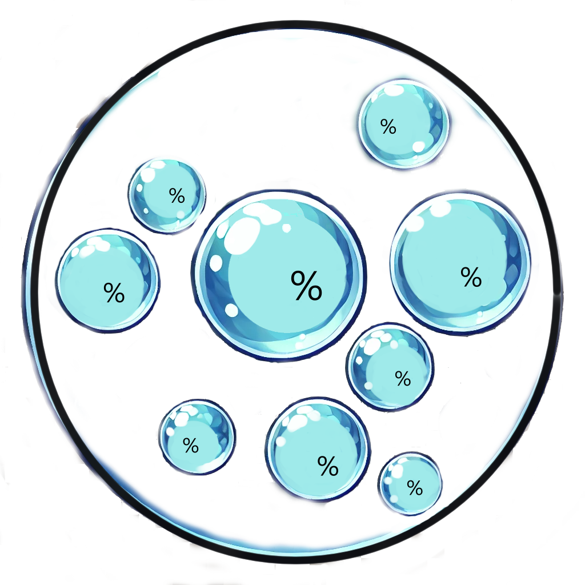

Un ETF ESG 100% gouverné par la communauté. BCI adoptera un système de sélection dynamique des actifs, basé sur les votes des membres d’Index Coop et de la DAO.

🔹 Méthodologie de sélection : Les actifs seront filtrés selon des critères ESG définis par la communauté (ex : empreinte carbone, PoS, audit de gouvernance).
🔹 Processus de mise à jour : Tous les 3 ou 6 mois, un vote de la DAO déterminera quels actifs doivent être ajoutés ou retirés.
📅 📌Nous proposons d’initier une phase de discussion pour affiner les critères ESG et établir un processus de gouvernance communautaire clair avant de lancer l’indice. Nous invitons la DAO Index Coop à partager ses suggestions pour finaliser ce modèle et garantir un produit aligné avec les valeurs de la communauté.